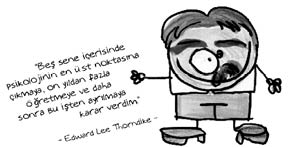

Edward Lee Thorndike (1874-1949)
Amerikalı eğitimci, psikolog. William James’in öğrencisidir. Harvard’da okuyacak kadar zeki olan bu adam, genç bir kadının onun sevgisine karşılık vermediğini düşündüğü için bu okulu bırakacak kadar da romantiktir. (Ya da şapşal. Artık yoruma göre değişir.) Gerçi Thorndike sonraları bu kadınla evlenecektir.
Thorndike, “deneme-yanılma yoluyla öğrenme” kuramını ortaya atan kişidir.

Fakat bu kadarla kalmamış, daha birçok şeyin kurucusu ve öncüsü olmuştur. “Karşılaştırmalı psikoloji”nin yani insan ve hayvan davranışları arasındaki benzerlik ve farklılıkları inceleyen psikoloji dalının ve “davranışçı yaklaşım”ın kurucularından, öğrenmenin uyarıcı ile tepkiler arasında bağ kurması sonucu oluştuğunu söyleyen “bağlantıcılık akımı”nın da öncülerindendir.
Genetik psikoloğu olarak işe başlamış, çocuklarda zekâ ve öğrenmeye yönelik geliştirdiği yöntemlerle eğitim psikolojisine katkıda bulunmuştur.
Deneme-yanılma yoluyla öğrenme
Bu öğrenme türünde, organizma, problemi çözmek ve sonuca ulaşmak için birçok yollar dener ve bu yollardan işe yarayanını benimser yani öğrenir.
Thorndike, başlangıç araştırmalarını civcivlerle yapmıştır. Civcivlerini, sonlarına kitaplar yerleştirilmiş labirentlerin içinden koşacak şekilde eğitmiştir. Yani ilk okumuş yazmış, gagası kitap tutmuş civcivlerin onun civcivleri olduğunu söyleyebiliriz. Fakat sorun şu ki, bu kültür abidesi civcivlerini koyacak bir oda bulmakta çok zorlanırmış. Bir seferinde ev sahibesi civcivlerin banyoda büyütülmesine izin vermeyince, psikolog, yardım istemek için hocasına gitmiş, o da onları evinin bodrum katına buyur etmiştir.
Bir deneyi daha var. Kahramanı kedi olan “bulmaca kutusu” deneyidir bu.
Bir adet kedi alınır, münasip bir kafese konur. Kedi, dışarı çıkmak veya dışarıdaki balığa ulaşmak için kapı mandalına bağlı ipi çekmelidir. Kedi yaptığı denemeler sonunda tesadüfen ipi çeker ve kapı açılır. Bu deney tekrarlandıkça kedinin kafesten çıkma süresi azalır ve sonunda kedi ipi çekip kafesten çıkmayı öğrenir. Bu çalışmadan deneme-yanılma esnasında yapılan davranışların kalıcı olduğu, diğerlerinin ise terk edildiği sonucunu çıkartır Thorndike. Bu deney, Skinner’in “edimsel koşullanma”sına da ilham kaynağı olmuştur.